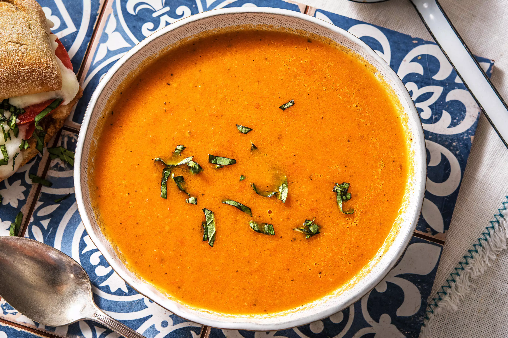

Tomatensoep met pesto broodjes
Deze tomatensoep met pesto broodjes is een heerlijk voorgerecht.
Ingrediënten
- 1 ui (gesnipperd)
- 750 gr tomaten
- 750 ml water
- 1 bouillonblokje
- 1 wortel (middelgroot)
- 1 klein blikje tomatenpuree
- handje verse basilicumblaadjes
- 1 (stok)brood
- 1 potje pesto
- 50 gr geraspte mozzarella kaas
Bereidingswijze
- Verwarm de grill of oven op 230 graden.
- Snijd het stokbrood in stukken en besmeer met een beetje pesto en bestrooi met een beetje mozzarella.
- Zet een soeppan op het vuur en fruit de ui ongeveer 3 min in de olijfolie. Voeg de wortel in kleine blokjes toe en de tomaten in parten en bak deze 5 min mee.
- Voeg het water en het bouillonblokje toe en roer de tomatenpuree er door. Voeg ook de verse basilicum toe. Laat 10 min pruttelen.
- Pureer nu alles met een staafmixer fijn en laat een paar minuutjes doorkoken. Breng eventueel nog op smaak met wat peper en zout. Grill ondertussen de broodjes 3 a 4 minuten onder de grill tot ze een mooi kleurtje hebben.
- Serveer de tomaten basilicum soep met de pestobroodje.
